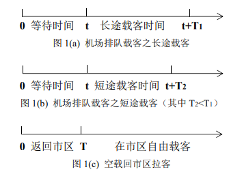
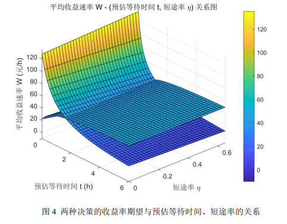
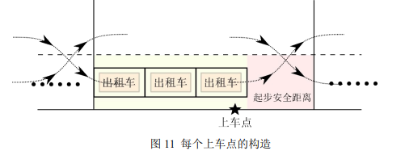

比赛官网: http://www.mcm.edu.cn/
(1) 分析研究与出租车司机决策相关因素的影响机理，综合考虑机场抵达航 班和出租车司机的收益，建立出租车司机选择决策模型，并给出司机的选择策略。
(2) 收集深圳宝安国际机场的航班信息及其深圳出租车的收费标准等数据， 给出该机场出租车司机的选择方案，并分析模型合理性和对相关因素的依赖性。
(3) “乘车区”经常会出现出租车排队载客和乘客排队乘车的情况。现有两 条并行车道，管理部门应如何设置“上车点”，并合理安排出租车和乘客，在保 证车辆和乘客安全的条件下，使得总的乘车效率最高。
(4) 机场的出租车载客收益与载客的行驶里程有关，乘客的目的地有远有 近，管理部门拟对某些短途载客再次返回的出租车给予一定的“优先权”，使这 些出租车的收益尽量均衡，试给出一个可行的“优先”安排方案。
送客到机场的出租车司机都将会面临两个选择：前往到达区排队等待载客返 回市区、直接空载返回市区拉客。本文主要研究出租车司机选择决策模型，并根 据深圳宝安国际机场和深圳出租车的情况分析模型的合理性；同时综合考虑乘车 效率和出租车收益，合理安排“上车点”和短途载客“优先权”。
针对问题一，建立一个模拟出租车司机决策的模型。司机决策的最终目的是 使收益率（单位时间内的收益）最大。影响司机决策的因素有司机可观测到的确 定信息——机场航班的抵达时间和“蓄车池”里已有的车辆数。司机可根据二者 预测排队的等待时间，用于决定是否排队载客。由于机场的出租车载客收益与载 客的行驶里程有关，机场排队载客还需分为一定比例的短途载客和长途载客，最 终用所设符号刻画出排队载客和回市区拉客的不同收益率期望，从而做出决策。
针对问题二，在深圳宝安国际机场官网中提取每天的航班信息，模拟司机查 看最近一段时间飞机抵达深圳的情况；同时搜集关于深圳出租车、交通路况的数 据，为所设符号赋值，并代入问题一所建立的模型中，用 Matlab 绘制出排队载 客和回市区拉客的收益率随排队等待时间的变化情况。二者图象交点所对应的排 队时间即为临界值：若司机预估时间超出临界值，司机会选择返回市区拉客，若 未超出，则选择排队等候载客。为验证模型的合理性，我们将从模型得出的结论 与现实生活中的数据或常识进行比较；由临界值变化的灵敏程度分析对出租车起 步价、里程价、市区平均行驶速度等变量的依赖性。
针对问题三，本模型综合分析了三种常见的出租车上客区构造，致力于在两 车道狭窄情况下对机场上出租车上客进行合理规划，最终根据狭窄道路的局限性 选出了最适宜的单车道上客模型。
针对问题四，现给予短途载客再次返回的出租车一定的“优先权”，使它们 与长途载客的出租车的单位时间的收益尽量均衡。“优先”体现在这些出租车能 直接返回上客区，减少第二次排队载客的时间，降低再次载客的时间成本。以正 态分布模拟接客行驶时间的分布，沿用问题一的时间轴，用所设符号表达出短途 车相对于长途车的平均收益，相对收益为 0 时所对应的行驶时间，即为区分短途 载客和长途载客的标准。利用问题二的部分数据和上海浦东机场的出租车数据， 得到划分时间标准并判断是否符合实际，以验证该模型的合理性。